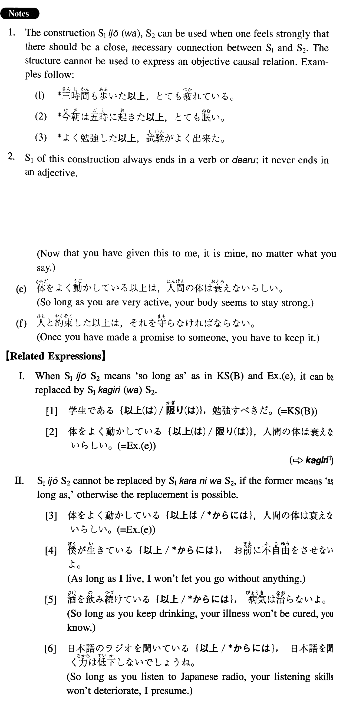

←
DoJG
→
以上（は）
(I. 64)
Example sentences
(ksa).
日本に来た
以上（は）
、日本語をしっかり勉強したい。
Since I came to Japan, I would like to study Japanese hard.
(ksb).
学生である
以上（は）
、勉強すべきだ。
So long as you are a student, you should study.
(a).
日本語を始めた
以上
、よく話せて、聞けて、読めて、書けるようになるまで頑張ります。
Now that I have begun to study Japanese, I will hang in there until I can speak and understand what I hear, and read and write well.
(b).
新車を買う
以上は
、出来るだけ燃費のいいのを買いたいです。
If I buy a new car at all, I would like to buy one with good gas mileage.
(c).
親である
以上
、子供の教育に関心があるのは当然でしょう。
If you are any sort of parent, you should be interested in your child's education.
(d).
貰った
以上は
、あなたが何と言おうと、私の物です。
Now that you have given this to me, it is mine, no matter what you say.
(e).
体をよく動かしている
以上は
、人間の体は衰えないらしい。
So long as you are very active, your body seems to stay strong.
(f).
人と約束した
以上は
、それを守らなければならない。
Once you have made a promise to someone, you have to keep it.
Formation
(i)
Vinformal
以上
(
は
)
先生
である以上は
As long as someone is a teacher
